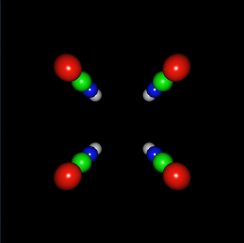
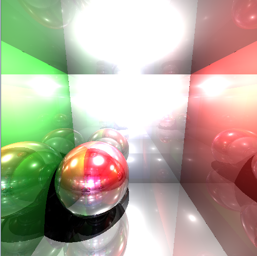
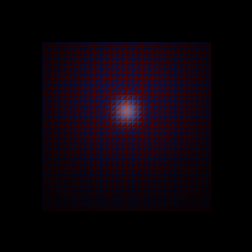
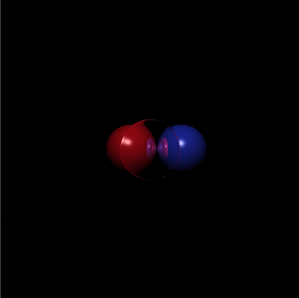
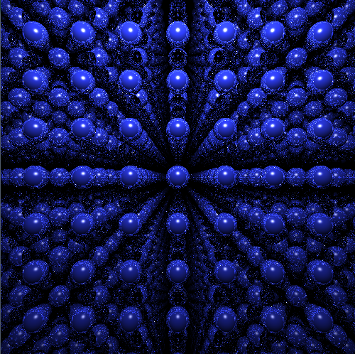

Ray Tracer
Project finished: January 2016
Reason to create project:
Project was created for course GPU [1] during my master studies.
Task was to implement ray tracer in CUDA using KD tree as spatial structure with several different traversing algorithms. Also implement ray tracer using persistent threads.
About project:
Project was implemented in C++ and CUDA and uses glut and pthread libraries.
Ray tracer uses KD tree to represent scene and tree is built on CPU.
There are 2 traversing algorithms implemented. First one always traverse from the root. Second one uses "ropes", references from each node of KD tree to its neighbours.
Primary rays are built on CPU and they are copied to GPU before ray tracing starts.
Rays are stored to buffer (stack) and new rays are stored to the end of buffer.
Ray tracer uses primary, shadow, reflected and refracted rays.
Scenes consisting of spheres and triangles can be rendered.
Application also contains CPU ray tracer for comparison.
Because of using persistent threads, same threads have to run for whole length of tracing. When running on Windows, registers have to be modified to render bigger scenes[2].
Report(in Czech language): link
Things yet to implement:
- building primary rays on GPU
- adding reflected rays to buffer instead of recursive tracing
- use SAH(Surface Area Heuristic) for building of KD tree
- loaders for .obj and other file formats
Literature used:
HAPALA, Michal; HAVRAN, Vlastimil. Review: Kd-tree Traversal Algorithms for Ray Tracing. In: Computer Graphics Forum. Blackwell Publishing Ltd, 2011. p. 199-213.
POPOV, Stefan, et al. Stackless KD-Tree Traversal for High Performance GPU Ray Tracing. In: Computer Graphics Forum. Blackwell Publishing Ltd, 2007. p. 415-424.
FOLEY, Tim; SUGERMAN, Jeremy. KD-tree acceleration structures for a GPU raytracer. In: Proceedings of the ACM SIGGRAPH/ EUROGRAPHICS conference on Graphics hardware. ACM, 2005. p. 15-22.
[1] GPU (Obecné výpočty na grafických procesorech - General-Purpose Computing on GPU) - https://cent.felk.cvut.cz/courses/GPU/
[2] Windows TDR (Timeout detection and recovery) kills GPU threads after several seconds (by default 2 seconds) to prevent screen freezing.
Register "TdrDelay" have to be modified to increase this time.
Renders:




